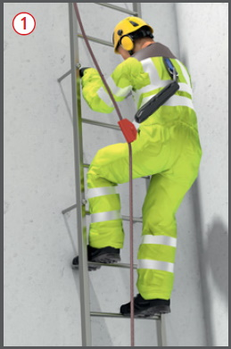
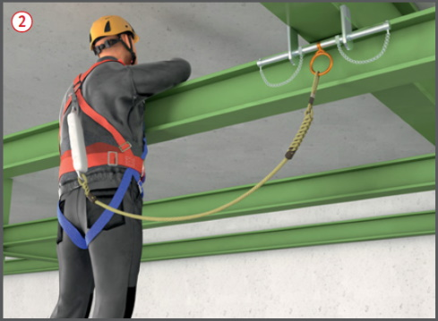
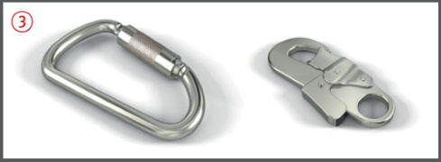
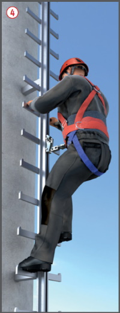
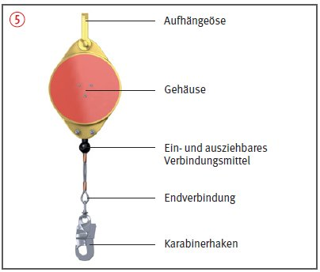
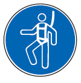

Persönliche Schutzausrüstungen gegen Absturz
|
|

Gefährdungen
- Auf Baustellen und in ähnlichen Bereichen mit hochgelegenen Arbeitsplätzen besteht die Gefahr des Abstürzens oder Durchstürzens.
- Ein Sturz in ein Auffangsystem kann eine Verletzung grundsätzlich nicht ausschließen, jedoch die Schwere der Verletzungsfolgen mindern.
- Versagen der PSAgA durch falsche Benutzung (z.B. Auffanggurt nicht richtig angelegt, Veränderung bzw. Ergänzung des Auffangsystems)
Auswahl/Benutzung
- Persönliche Schutzausrüstungen gegen Absturz (PSAgA) sind zu benutzen, wenn
- Absturzsicherungen (Seitenschutz) aus arbeitstechnischen Gründen nicht möglich
und
- Auffangeinrichtungen (Fanggerüste, Dachfanggerüste, Auffangnetze) unzweckmäßig sind.


- PSA gegen Absturz können benutzt werden
- bei Arbeiten geringen Umfanges, z. B. in der Nähe von Flachdachkanten, oder in der Nähe von Bodenöffnungen,
- an Gittermasten,
- bei Montagearbeiten,
- in Verbindung mit Steigeinrichtungen (Steigleitern, Steigeisengänge)

 .
.
- Dabei ist Folgendes zu beachten:
- Auffangsysteme mit Auffanggurten und Geräten mit energieabsorbierender Funktion oder Verbindungsmittel mit Falldämpfer benutzen, wenn Maßnahmen zum Auffangen Abstürzender oder Abrutschen der durchzuführen sind
 .
.
- Zum Befestigen von PSA gegen Absturz sind Anschlageinrichtungen geeignet, die DIN EN 795 entsprechen.
- Anschlagmöglichkeiten an Teilen baulicher Anlagen können zur Befestigung benutzt werden, wenn deren Tragfähigkeit für eine Person nach den technischen Bau bestimmungen mit einer Fangstoßkraft von 6 kN einschließlich den für die Rettung anzusetzenden Lasten nachgewiesen ist.
- PSA gegen Absturz möglichst oberhalb des Benutzers anschlagen.

- Der weisungsbefugte und fachkundige Vorgesetzte hat die geeigneten Anschlageinrichtungen festzulegen und dafür zu sorgen, dass die PSA gegen Absturz benutzt werden.
- Das Verbindungsmittel (Seil, Gurtband) bei Benutzung straff halten und Schlaffseilbildung durch Einsatz einer Längeneinstellvorrichtung vermeiden. Höhensicherungsgeräte halten das Verbindungsmittel automatisch straff
 .
.
- Die Verbindungsmittel (Seile/Gurtbänder) nicht über scharfe Kanten beanspruchen, nicht knoten und nicht behelfsmäßig verlängern.
- Nur Ausrüstungen mit Karabinerhaken auswählen, die eine Sicherung gegen unbeabsichtigtes Öffnen haben
 .
.
- Steigschutzeinrichtungen nur mit Auffanggurt mit vorderer Steigschutzöse benutzen . Es gibt Auffanggeräte, die mit zwei vorderen Auffangösen (am Bauchgurt und im oberen sternalen Bereich) verbunden werden müssen.

- Der Vorgesetzte hat geeignete Verfahren zur Rettung (z. B. mittels Abseilgeräten) von Beschäftigten festzulegen. Dabei beachten, dass durch längeres bewegungsloses Hängen im Gurt Gesundheits gefahren entstehen können.
- Die richtige und sichere Benutzung der PSA gegen Absturz und die Ausführung der Rettung praktisch üben.
- PSA gegen Absturz vor schädigenden Einflüssen, z. B. Öl, Säure, Lauge, Putzmittel, Funkenflug, Erwärmung über 60°, schützen und trocken lagern.
Kennzeichnung
- Nur CE-gekennzeichnete Ausrüstungen benutzen.
Muster der CE-Kennzeichnung
- Kennzeichnung des Arbeitsbereiches:

Prüfungen
- PSA gegen Absturz vor jeder Benutzung durch Inaugenscheinnahme überprüfen.
- Prüfung durch einen Sachkundigen nach Bedarf, mindestens jedoch alle 12 Monate.
- Beschädigte oder durch Absturz beanspruchte PSA gegen Absturz nicht weiter verwenden. Sie sind der Benutzung zu entziehen, bis eine fachlich geeignete Person (z.B. Sachkundiger) der weiteren Benutzung zugestimmt hat.
07/2021